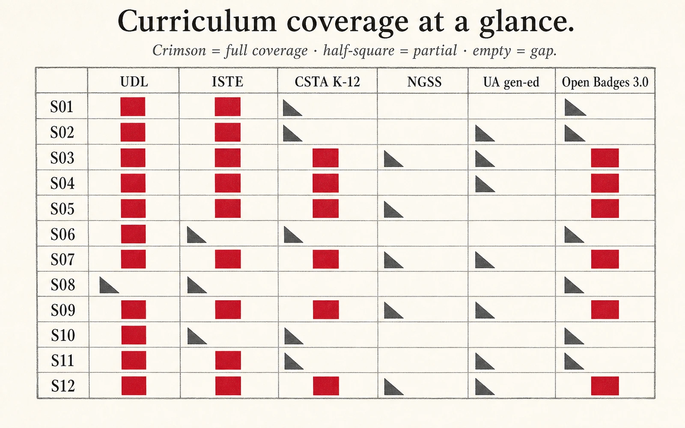

Every learning outcome in this microcredential traces forward to a deliverable, a rubric criterion, and at least one external standard. Every deliverable traces backward to the LOs it assesses. If a row cannot be filled, the design has a gap — the matrix is how you find it.
The spine of the program at the top level — LOs defined, sessions, deliverables scored, rubric floor criteria, and external frameworks aligned.
Crimson cells = full coverage of the framework's relevant strand. Half-squares = partial. Empty = a real gap (worth a faculty-meeting agenda item, not a hand-wave). Use this before diving into the filterable matrix below.

Click any chip to filter. Rows show how each learning outcome traces to the activity that produces evidence, the deliverable it feeds, the rubric criterion it maps to, and the external standards it advances.
Skill tags crosswalk to public taxonomies (ESCO, Lightcast Open Skills) so employers and registrars can reason about transferability. See skills-crosswalk.json for the full per-criterion mapping.
| LO | Learning outcome | Session | Activity | Deliverable | Rubric criterion | Frameworks | Skills (ESCO / Lightcast) |
|---|